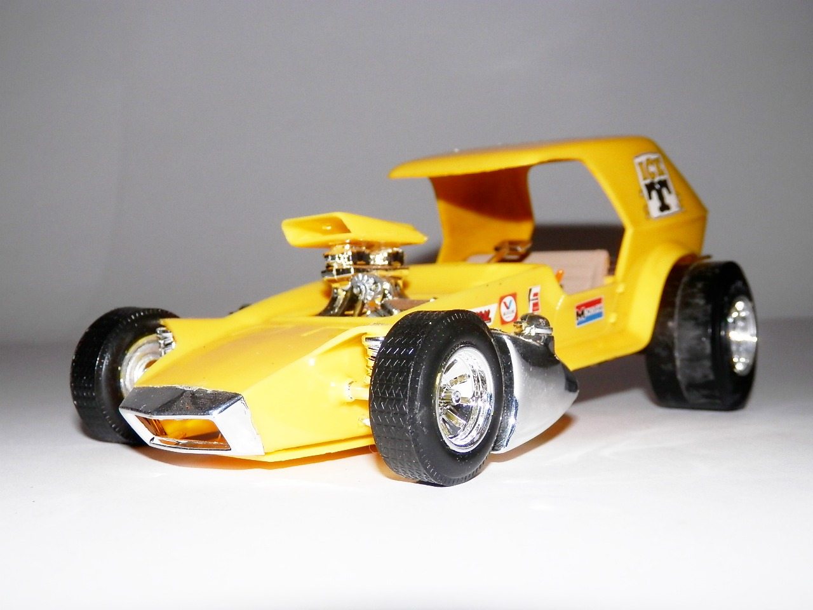
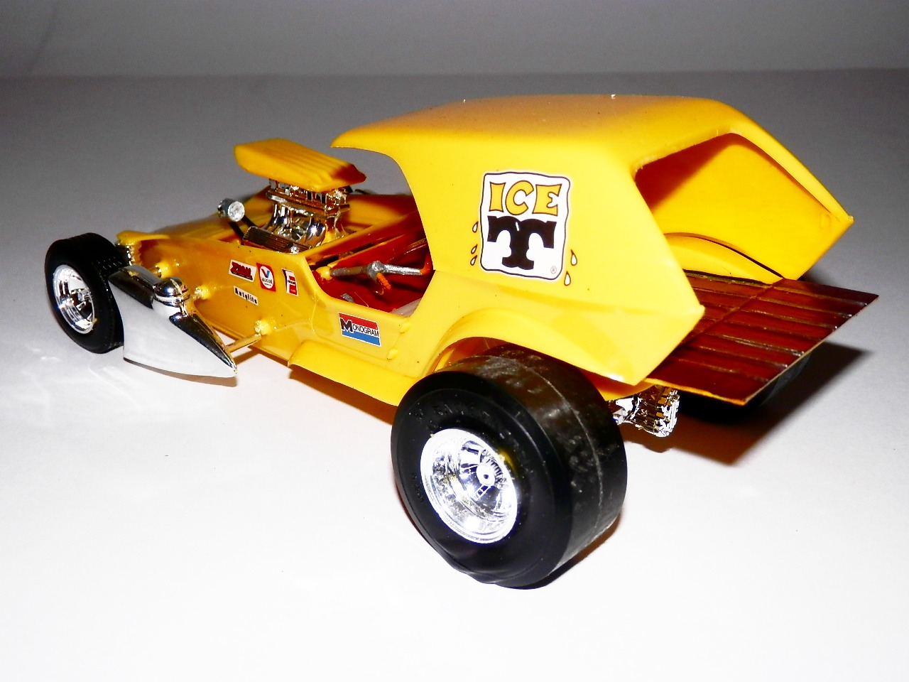
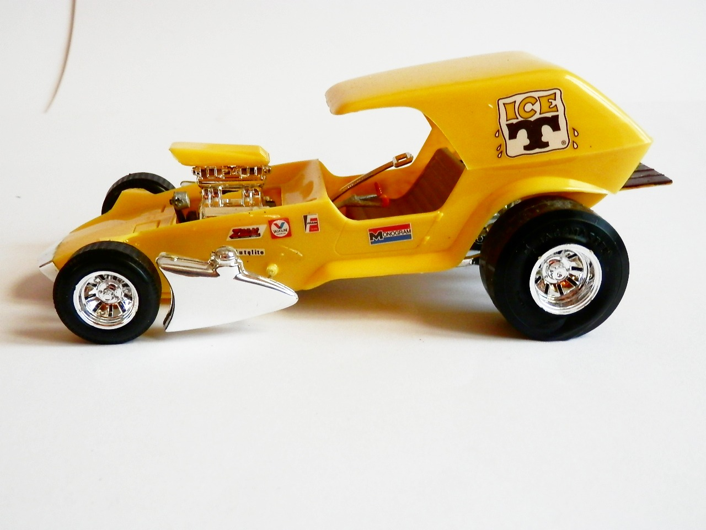
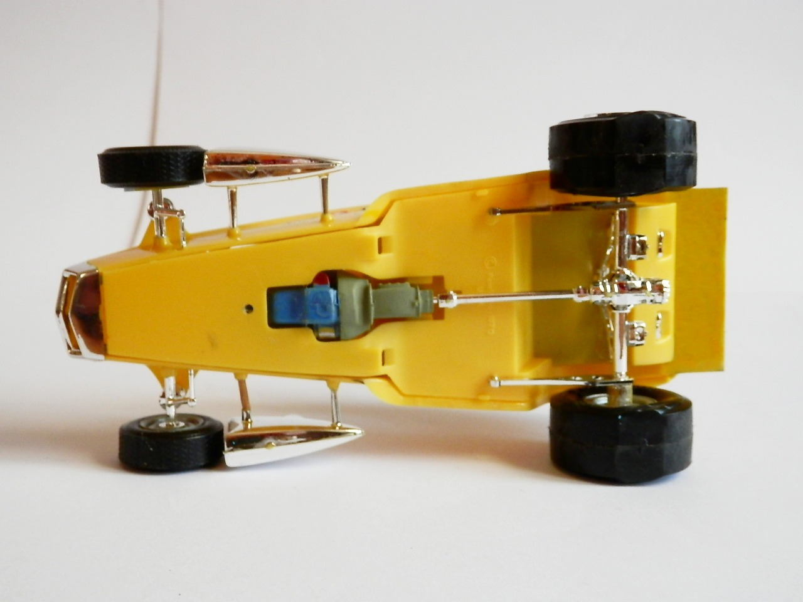

Auto e veicoli stradali · scale model archive
Ice `T`
Ice `T` — Kit: Monogram, Scale: 1/24. Great Tom Daniel's funny car design

Photo gallery



English description
Great Tom Daniel's funny car design
Descrizione italiana
Splendido design da funny car di Tom Daniel.